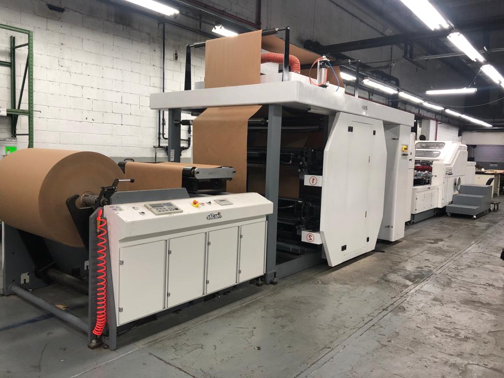

El presente proyecto tiene como objetivo mejorar la eficiencia de producción y reducir el impacto ambiental en la industria de las bolsas de papel biodegradable. Se están utilizando tecnologías innovadoras, como el monitoreo de la materia prima y el producto final, el control de la velocidad de la máquina y la optimización del consumo energético.
Mediante la implementación de balanzas precisas para medir la cantidad de materia prima y producto final, así como el uso de un Arduino y un encoder para monitorear y ajustar la velocidad de la máquina, buscamos lograr un uso más eficiente de los recursos y reducir los desperdicios innecesarios.
Además, el análisis de las redes eléctricas nos permitirá identificar ineficiencias energéticas y tomar medidas para optimizar el consumo eléctrico. Todo esto contribuirá a mejorar el OEE% (Overall Equipment Efficiency), que es una métrica utilizada para evaluar la eficiencia global de la máquina de bolsas de papel biodegradable.
El OEE% se calcula multiplicando tres factores.
La disponibilidad, que mide el tiempo en que la máquina está en funcionamiento;
El rendimiento, que evalúa la producción real en comparación con la producción teórica;
La calidad, que considera la cantidad de productos defectuosos o de baja calidad.
Este proyecto tiene un impacto positivo en el medio ambiente, promoviendo la reducción de desperdicios de materia prima, la eficiencia energética y el uso de materiales biodegradables en lugar de bolsas de plástico.
¡Juntos podemos avanzar hacia una producción más sostenible y amigable con el medio ambiente!
